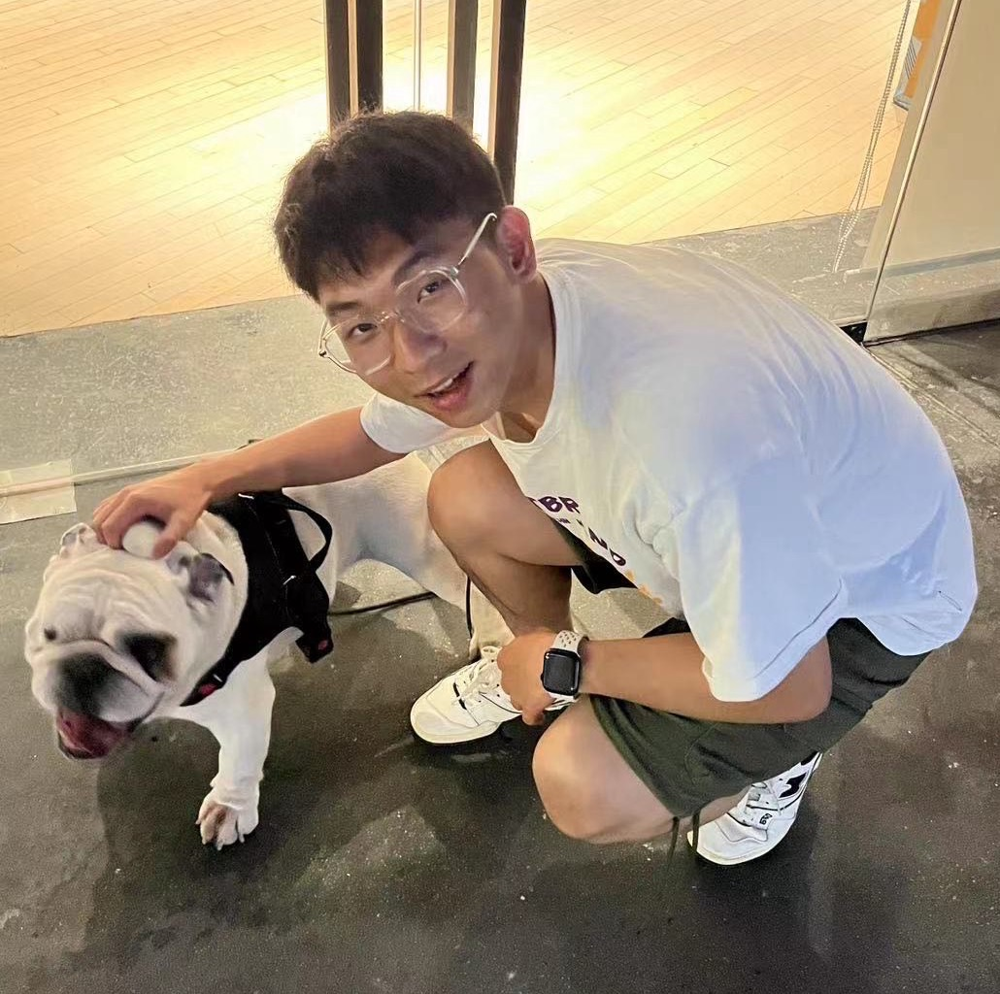

I am currently a first-year Ph.D. student at The Chinese University of Hong Kong, advised by Prof. Zhongyu Li. I received my M.S. degree from the School of Computer Science at Wuhan University in 2026, advised by Prof. Hua Zou, Prof. Yongchao Xu, and Prof. Bo Du. I received my B.S. degree in Software Engineering from Wuhan University in 2023. Currently, I am a research intern at Alibaba DAMO Academy, working under the guidance of Dr. Xin Li. If you are interested in collaborating with me or want to have a chat, always feel free to contact me through e-mail.
Embodied Intelligence (Simulated data generation, 3D Simulation, etc.)
3D Vision
Artificial Intelligence for Medical Image
RynnWorld-Teleop: An Action-Conditioned World Model for Digital Teleoperation
Haoyu Zhao, Xingyue Zhao, Hangyu Li, Biao Gong, Kehan Li, Siteng Huang, Xin Li, Deli Zhao, Zhongyu Li
arXiv preprint.
[PDF]
RynnWorld-4D: 4D Embodied World Models for Robotic Manipulation
Haoyu Zhao, Xingyue Zhao, Siteng Huang, Xin Li, Deli Zhao, Zhongyu Li
arXiv preprint.
[PDF]
SMAP: Self-supervised Motion Adaptation for Physically Plausible Humanoid Whole-body Control
Haoyu Zhao, Sixu Lin, Qingwei Ben, Minyue Dai, Hao Fei, Jiangmiao Pang, Jingbo Wang, Junting Dong, Hua Zou
arXiv preprint.
[PDF]
Articulat3D: Reconstructing Articulated Digital Twins From Monocular Videos with Geometric and Motion Constraints
Lijun Guo*, Haoyu Zhao*, Xingyue Zhao, Rong Fu, Linghao Zhuang, Siteng Huang, Zhongyu Li, Hua Zou
European Conference on Computer Vision (ECCV).
[PDF] [Code]
High-Fidelity Simulated Data Generation for Real-World Zero-Shot Robotic Manipulation Learning with Gaussian Splatting
Haoyu Zhao, Cheng Zeng, Linghao Zhuang, Yaxi Zhao, Shengke Xue, Hao Wang, Xingyue Zhao, Zhongyu Li, Kehan Li, Siteng Huang, Mingxiu Chen, Xin Li, Deli Zhao, Hua Zou
IEEE Robotics and Automation Letters(RA-L).
[PDF] [Code]
Towards Affordance-Aware Robotic Dexterous Grasping with Human-like Priors
Haoyu Zhao, Linghao Zhuang, Xingyue Zhao, Cheng Zeng, Haoran Xu, Yuming Jiang, Jun Cen, Kexiang Wang, Jiaan Guo, Siteng Huang, Xin Li, Deli Zhao, Hua Zou
Association for the Advancement of Artificial Intelligence (AAAI).
[PDF] [Code]
Efficient Physics Simulation for 3D Scenes via MLLM-Guided Gaussian Splatting
Haoyu Zhao, Hao Wang, Xingyue Zhao, Hongqiu Wang, Zhiyu Wu, Chengjiang Long, Hua Zou
International Conference on Computer Vision (ICCV).
[PDF] [Code]
SG-GS: Photo-realistic Animatable Human Avatars with Semantically-Guided Gaussian Splatting
Haoyu Zhao, Chen Yang, Hao Wang, Xingyue Zhao, Wei Shen
European Conference on Artificial Intelligence (ECAI).
[PDF] [Code]
CHASE: 3D-Consistent Human Avatars with Sparse Inputs via Gaussian Splatting and Contrastive Learning
Haoyu Zhao, Hao Wang, Chen Yang, Wei Shen
European Conference on Artificial Intelligence (ECAI).
[PDF] [Code]
HFGS: 4D Gaussian Splatting with Emphasis on Spatial and Temporal High-Frequency Components for Endoscopic Scene Reconstruction
Haoyu Zhao, Xingyue Zhao, Lingting Zhu, Weixi Zheng, Yongchao Xu
British Machine Vision Conference (BMVC).
[PDF] [Code]
MoreStyle: Relax Low-frequency Constraint of Fourier-based Image Reconstruction in Generalizable Medical Image Segmentation
Haoyu Zhao, Wenhui Dong, Rui Yu, Zhou Zhao, Bo Du, Yongchao Xu
International Conference on Medical Image Computing and Computer-Assisted Intervention (MICCAI).
[PDF] [Code]
WIA-LD2ND: Wavelet-based Image Alignment for Self-supervised Low-Dose CT Denoising
Haoyu Zhao, Guyu Liang, Zhou Zhao, Bo Du, Yongchao Xu, Rui Yu
International Conference on Medical Image Computing and Computer-Assisted Intervention (MICCAI).
[PDF] [Code]
|
[2025.05 – Present] Research Intern, Alibaba DAMO Academy, supervised by Xin Li |
|
|
[2025.07 – 2025.10] Remote Research Intern, NUS, supervised by Hao Fei |
|
|
[2024.11 – 2025.05] Research Intern, Shanghai AI Lab, supervised by Junting Dong |
|
|
[2024.06 – 2024.09] Research Intern, SJTU, supervised by Wei Shen |
|
Reviewer for CVPR, ICCV, ECCV, CoRL, AAAI, MICCAI, ECAI, PRCV
[2026.01] 2025 Outstanding Academic Cooperation Intern (awarded by DAMO Academy)
[2025.10] The Didi Scholarship
[2023.06] Outstanding Undergraduate of Wuhan University (Top 15% in Wuhan University)
[2020-2025] Wuhan University First-class Scholarship (Top 5% in Wuhan University)
[2022.10] The Tianyuan Dico Scholarship